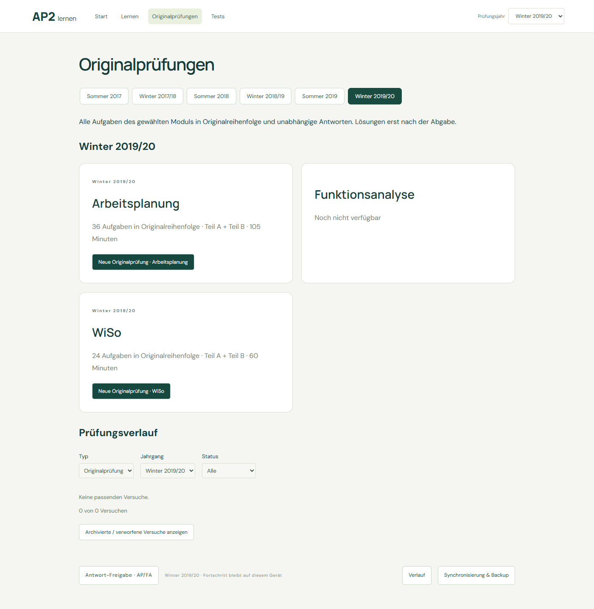
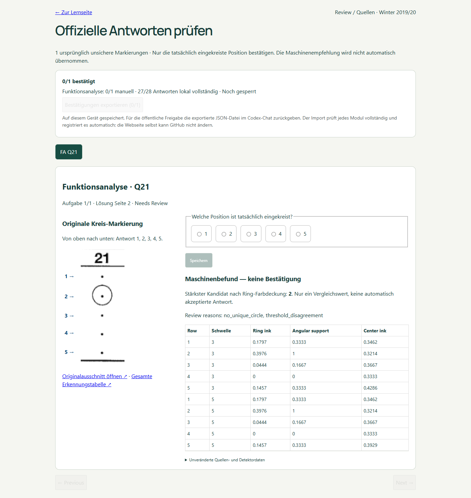

AP and WiSo ready. Funktionsanalyse awaits actual user confirmation of Q21. No machine candidate accepted. No later season processed.
Review FA Q21 → select circle → save → export JSON
| Module | Questions | MC ready | U crops | Status |
|---|---|---|---|---|
| arbeitsplanung | 36 | 28/28 | 8 | Production |
| funktionsanalyse | 36 | 27/28 | 8 | Q21 — manual review |
| wiso | 24 | 18/18 | 6 | Production |

Source page2. Detector measurements preserved. User confirmation required.

